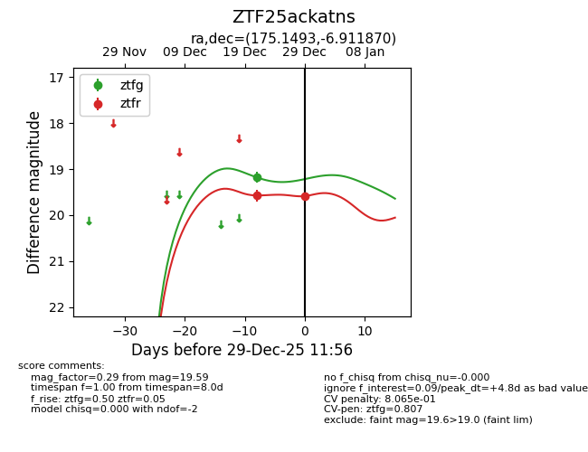
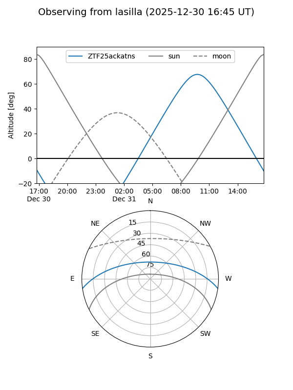
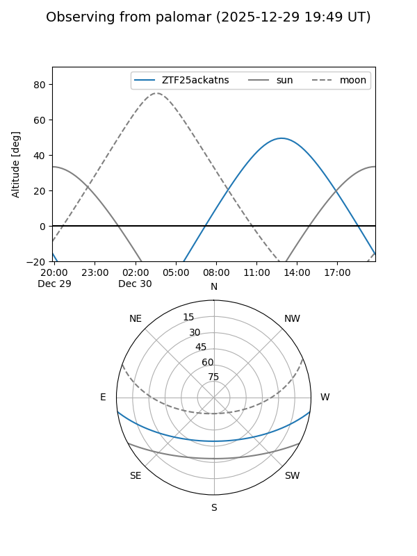
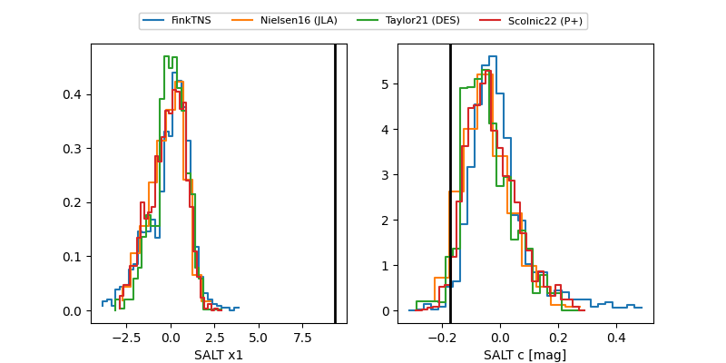

ZTF25ackatns
Target ZTF25ackatns at 2025-12-29 11:58
Aliases and brokers:
FINK: fink-portal.org/ZTF25ackatns
Lasair: lasair-ztf.lsst.ac.uk/objects/ZTF25ackatns
ALeRCE: alerce.online/object/ZTF25ackatns
alt names
ZTF25ackatns (ztf,fink_ztf)
Coordinates:
equatorial (ra, dec) = 175.1493,-6.91187
equatorial (HMS+DMS) = 11:40:35.84,-06:54:42.73
galactic (l, b) = (273.6400,+51.88502)
Flags:
likely cv
Photometry:
last ztfg=19.18, ztfr=19.59
1 ztfg, 2 ztfr detections
Lightcurve

Visibility


Additional plots
